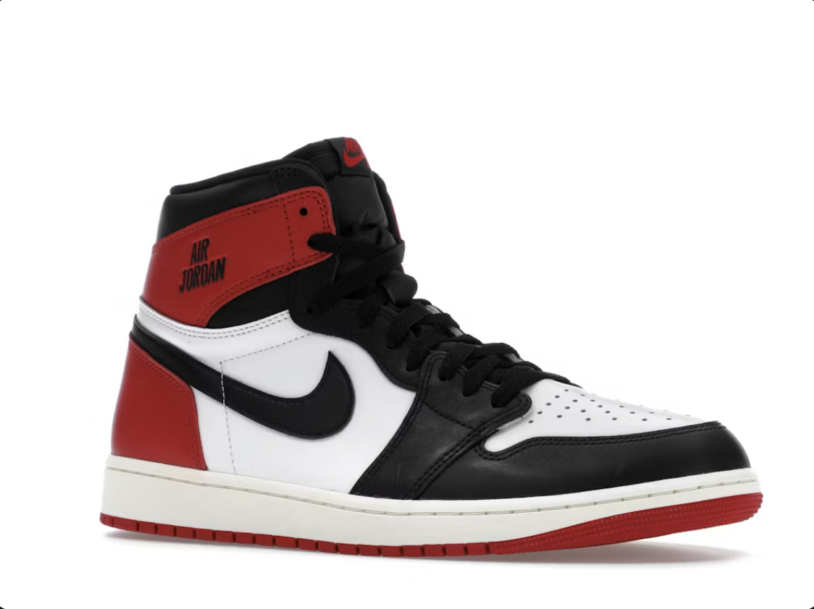
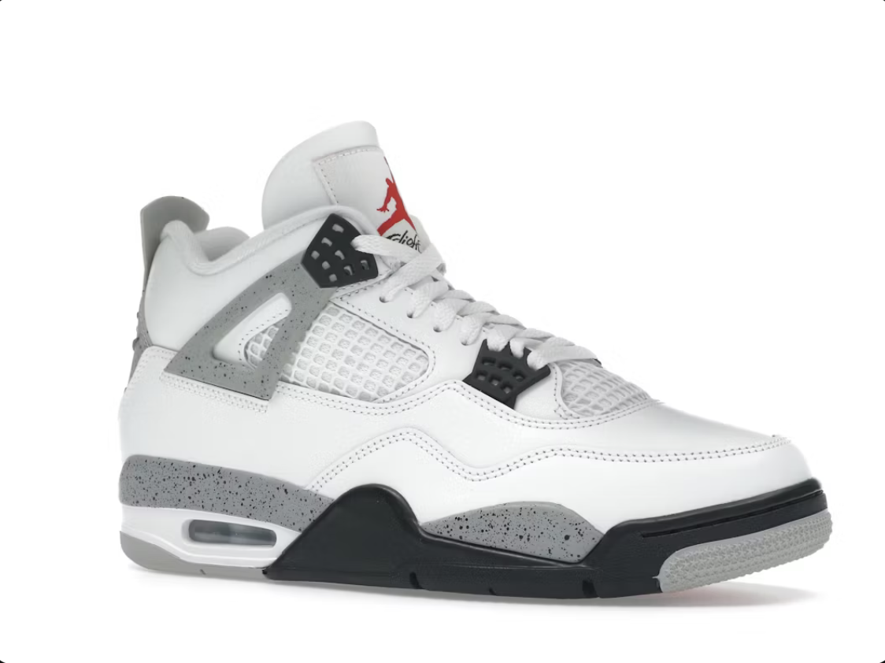
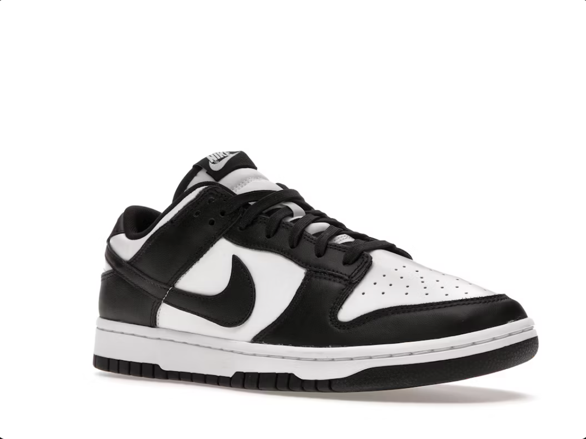

Air Jordan 1

A cipő, ami 1985-ben mindent megváltoztatott, és lerakta a modern sneaker kultúra alapjait. Peter Moore tervezte Michael Jordan első szezonjára. A legenda szerint az NBA meccsenként 5000 dollárra büntette a játékost a fekete-piros ("Banned") színállás miatt, mert az megszegte a liga akkori mezszabályait – ezt a Nike egy zseniális reklámkampánnyal használta ki. Magas szárú (High) verziója a legikonikusabb, de a Mid és Low változatok is uralják az utcai divatot a letisztult, klasszikus formavilágukkal és a popkulturális hatásukkal.
Air Jordan 4
1989-ben debütált, és a zseniális tervező, Tinker Hatfield nevéhez fűződik, aki valami sokkal technikásabbat akart letenni az asztalra az elődeihez képest. Ez volt az első Jordan modell, amin megjelent a jellegzetes hálós (mesh) oldalelem, a fűzőket tartó műanyag „szárnyak”, valamint a nyelven lévő „Flight” felirat. A kosárpályákon kívül Spike Lee Do the Right Thing című filmje lőtte ki a népszerűségét. Manapság az egyik legkeresettebb és leginkább hypeolt sziluett, ami a vaskosabb, tech-központúbb dizájnjával és a prémium anyaghasználatával hódít.

Air Force 1

Bruce Kilgore tervezte 1982-ben, és ez volt a legelső kosaras cipő, amelybe beépítették a Nike forradalmi Air légpárna technológiáját. Bár eredetileg a pályára szánták, a hip-hop kultúra pillanatok alatt kisajátította, így vált az utcai divat abszolút uralkodójává. A teljesen fehér (triple white) Low verzió egy íratlan alapszabály minden ruhatárban, mivel elképesztően könnyen kombinálható bármilyen szettel. Több mint 40 éve lényegében változatlan formában nyújt brutális tartósságot és kényelmet.
Dunk Low Retro
Bár nagyon hasonlít az Jordan 1-re és szintén 1985-ben jött ki, a Dunk eredetileg az amerikai egyetemi kosárlabdacsapatoknak készült a „Be True to Your School” kampány keretein belül. Igazi újjászületését a 2000-es évek elején élte át, amikor a deszkások felfedezték maguknak a lapos, jól tapadó talpa miatt – ebből született meg a párnázottabb nyelvvel ellátott Nike SB vonal. Az utóbbi években a sima Dunk Low verziók teljesen elárasztották az utcákat, és a mai napig a legnépszerűbb limitált kollaborációk alapját képezik.
